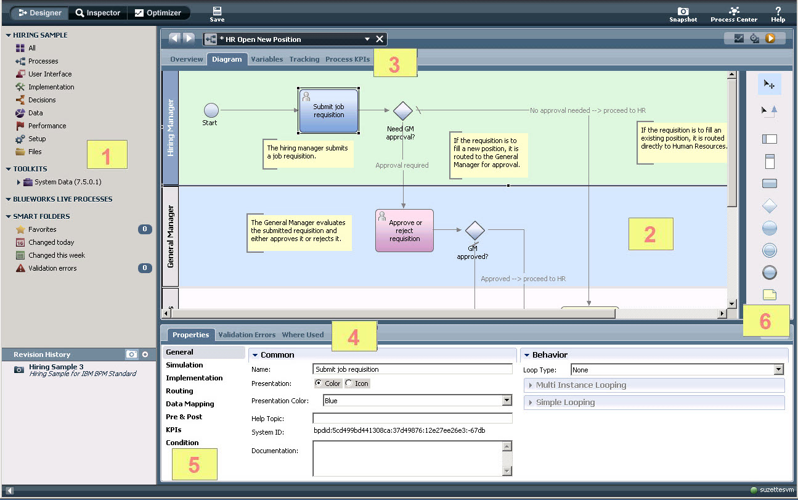
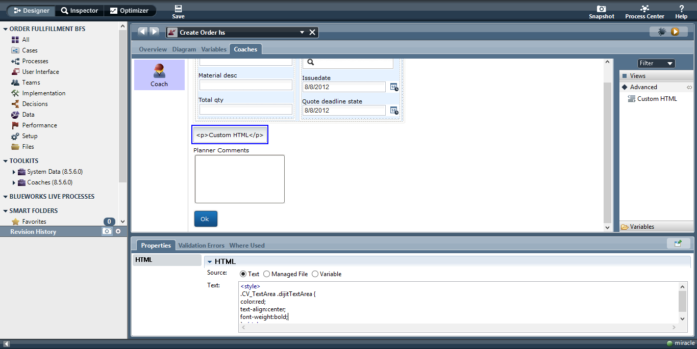

IBM
IBM Business Process Manager
Utilized my proficiency in IBM BPM (Business Process Manager) and Javascript to create enterprise web and mobile applications for various IBM clients. With BPM, I can map out complex business processes from end-to-end.
Each step can represent an automated task, configured to either the client's database or an IBM-provided one accessed with SQL commands.
Alternatively, a step may represent a human task, in which I create user interfaces with out-of-the-box features, or more commonly, custom UIs with HTML/CSS/Javascript. This allows a complete business solution from low-level database reworking to customer-facing interfaces.
 Sample images have been provided in lieu of confidential content.My work in BPM also involved forging client relations and pitching proof-of-concept solutions to clients as a business analyst. During this initial stage, the clients' as-is business processes are thoroughly diagrammed through continuous communication and analysis.
Clients have included Chevron, The State of Alaska Parks and Recreation, New York Life, SAP, AXA, and IBM Client Vantage.
IBM Client Vantage
Created two internal-facing websites for the IBM Client Vantage team. This involved designing low-fidelity prototypes and mockups and engineering their front-end layout and configuration. The sites are hosted on IBM Cloud (formerly IBM Bluemix) through Cloud Foundry, using a continuous delivery toolchain integrated with Github.
In addition, I have published an article detailing the process of hosting websites on the IBM Cloud platform on IBM developerWorks: IBM Bluemix - Making changes to websites hosted on Bluemix using Github
Key Skills: HTML/CSS/Javascript
IBM Forms Experience Builder
(recently acquired by HCL)I have also acquired proficiency in building applications in IBM Forms Experience Builder. https://developer.ibm.com/recipes/tutorials/ibm-forms-experience-builder-performing-calculations-in-javascript-events/
2019 Lily Peng